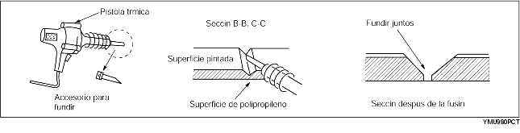
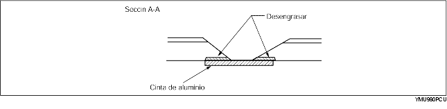
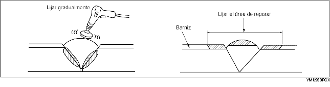
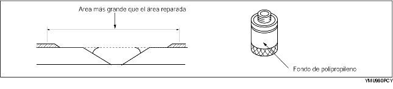
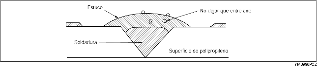

Reparación de parachoques de polipropileno que tienen la superficie de polipropileno tan dañada que no se puede reparar con un barnizado simple.
1. Mediante un cuchillo, cortar los bordes ásperos alrededor del área dañada para alisarla. Lijar el área mediante una alisadora, para crear un ángulo de 45°.

2. Soldadura del área dañada


3. Mediante una pistola térmica, fundir la barra de soldadura de polipropileno y llenar la ruptura.


4. Lijar gradualmente, porque el calor producido por la abrasión podría fundir la superficie del polipropileno. Lijar el área en que se aplicará el estuco.

5. Mediante un cepillo, aplicar uniformemente una capa de fondo de polipropileno sobre un área más grande que el área reparada. Dejar secar durante unos 10 minutos a 20 °C (68 °F).

6. Mezclar el agente primario y el agente secante en relación uno a uno. Aplicar la mezcla sobre el área dañada.

El estuco es un adhesivo epoxídico de dos componentes.
Cuando se endurece, el estuco garantiza un buen revestimiento con la misma flexibilidad que el polipropileno.
También el estuco para parachoques de uretano es un adhesivo epoxídico de dos componentes. Sin embargo, es diferente del estuco para parachoques de polipropileno. Si se utiliza un estuco no adecuado, la reparación puede resultar defectuosa.
7. Lijar el área con papel de lija N. 180-240.

8. Desengrasar la superficie barnizada.
9. Mezclar el fondo con el agente endurecedor en relación uno a uno. Aplicar el fondo sobre el área reparada y sobre la superficie del parachoques mediante un cepillo o atomizador.

Utilizar el fondo dentro de 16 horas después de la preparación.
10. Dejar secar la parte.
11. Añadir emoliente al fondo de uretano y rociarlo sobre el área reparada.

12. Secamiento al aire 20 °C (68 °F) - mínimo 8 horas.
Secamiento forzado 60 °C (140 °F) - 1 hora.
13. Lijar delicadamente toda la superficie del parachoques mediante papel de lija N. 400-600. No exponer la superficie de polipropileno. (Se puede lijar en húmedo o en seco).
14. Desengrasar toda la superficie del parachoques. Para desengrasar la superficie, estregarla rápidamente mediante un trapo limpio.
15. Aplicar el color de la carrocería al parachoques de polipropileno.
16. Secamiento al aire 20 °C (68 °F) - mínimo 8 horas.
Secamiento forzado 60 °C (140 °F) - 1 hora.